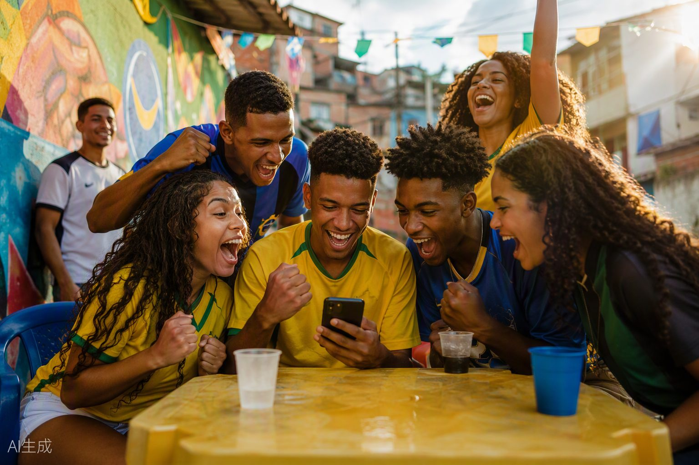

王者荣耀 · 国际服营销思路
如何把中国 MOBA 做成本地游戏 · 从巴西首发、东南亚共创到区域电竞
如何把中国 MOBA 做成本地游戏 · 从巴西首发、东南亚共创到区域电竞
我在英国留学期间真实体验了王者荣耀国际服（Honor of Kings），打到王者 20 星、本命英雄区标， 同时拥有国内服（最高星耀）和国际服的双服深度体验。这让我能直接对比同一个 IP 在两种市场环境下的运营差异—— 不只是从报告里读「本地化」，而是作为身处其中的玩家亲身感受它。
王者国际服没有把「海外」当成一个统一市场。它先以巴西验证完整本地化，再进入 MENA、东南亚、日本、欧美等区域， 并逐步补上本地内容、创作者与电竞体系。这套路径的关键不是上线国家更多，而是每进入一个市场，都重新搭建四个入口：
服务器、包体、语言和教学，让玩家顺利完成第一局。
本地声音、人物与文化符号，让内容不再像「进口游戏」。
创作者、组队活动与社区，让玩家找到一起玩的人。
区域赛事和晋级通道，让当地玩家拥有长期目标。
| 层级 | 已有动作 | 真正解决的问题 |
|---|---|---|
| 产品本地化 | 区域服务器、小包体、多语言、完整配音、英雄昵称与教学 | 让我能玩，也敢开始玩 |
| 内容本地化 | 巴西卡波耶拉、马来西亚羽球与 Silat、印尼 Garuda 共创 | 让我在内容里认出自己 |
| 社区本地化 | 本地创作者、CHOKBR、JSPT、区域公开赛 | 让我找到一起玩的人 |
| 观看本地化 | 本地解说、区域战队、最多 12 种语言实时字幕 | 让我听懂，也能加入讨论 |
我的判断：最值得研究的不是「翻译得多完整」，而是把本地团队、产品体验和玩家反馈一起放进区域运营闭环。
每个案例按「它做了什么 → 真正解决了什么」拆开。点击模块展开完整分析：
针对三个重点市场的真实缺口给出区域提案，每套都配了概念视觉。点击模块展开完整提案：

从「敢开始玩」到「找到一起玩的人」再到「成为生活的一部分」——这正是本地化从功能层走向文化层的完整阶梯。
王者国际服已经完成从「产品出海」到「区域经营」的第一步。下一阶段的竞争，不只是覆盖更多语言和市场， 而是让每个重点区域形成独立、持续的内容与社区资产。